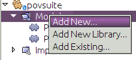
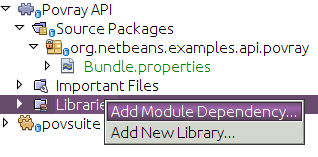
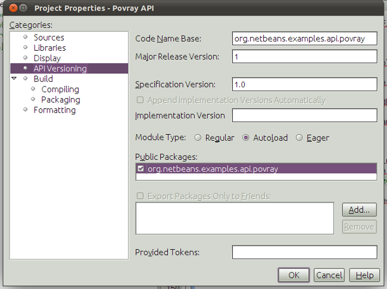

Apache NetBeans
Apache NetBeansLatest release
Writing POV-Ray Support for NetBeans V—Creating an API
| This tutorial needs a review. You can edit it in GitHub following these contribution guidelines. |
Creating the API
As discussed when we designed POV-Ray support, we will need an API—there will be some intercommunication between POV-Ray files and the project. In particular, we will need some interfaces:
-
MainFileProvider—find the main file of a project—the one to render when the whole file is built, and allow a POV-Ray scene file node to find out if it is the main file (so it can bold-face its display name). -
RendererService—an API a POV-Ray file node can call to ask that it be rendered as an image -
ViewService—an API a POV-Ray file can call to ask that its associated image be shown in the IDE, rendering it if necessary.
For this, we will actually create a separate module. That way we avoid a dependency between file support and project support—either module will be loadable by itself as long as the module providing the API is there. Also, this helps in delivering updates—the API presumably will remain stable, and psychologically having it in a separate module helps the developer to be aware when they are making API changes. It also means that a completely different module supporting POV-Ray files could still get them rendered via this API, and completely different project support could be provided with no changes to the file support module.
So it’s generally healthy for the codebase to do it this way.
-
Right-click the application’s Modules node and choose Add New, as shown below:

This is a faster mechanism for creating new modules, compared to going to File | New Project and then clicking through to the New Module wizard.
-
Name the project "api" and click Next or press Enter.
-
Provide the code name "org.netbeans.examples.api.povray"—this follows the NetBeans package naming conventions that public packages shall have the name
org.netbeans.api…to indicate visually that they are intended to be API (and thus kept backward compatible). Provide the display name "Povray API". Click Finish or press Enter to create the project
1. Right-click the Libraries node of the Povray API project and choose Add Module Dependency.

This is a faster mechanism for setting new module dependencies, compared to going to using the Project Properties window to do so.
Add a new dependency on the File System API module (look for FileObject for a fast way to find it).
-
Create a new abstract Java class in
org.netbeans.modules.examples.api.povraycalledMainFileProvider, and implement it as follows:
package org.netbeans.examples.api.povray;
import org.openide.filesystems.FileObject;
public abstract class MainFileProvider {
public abstract FileObject getMainFile();
public abstract void setMainFile (FileObject file);
public boolean isMainFile (FileObject file) {
return file.equals(getMainFile());
}
}-
Create a new abstract Java class in
org.netbeans.modules.examples.api.povraycalledRendererService, and implement it as follows:
package org.netbeans.examples.api.povray;
import java.util.Properties;
import org.openide.filesystems.FileObject;
public abstract class RendererService {
public static final String PROJECT_RENDERER_KEY_PREFIX = "renderer.";
public static final String PRODUCTION_RENDERER_SETTINGS_NAME = "production";
public abstract FileObject render(FileObject scene, String propertiesName);
public abstract FileObject render(FileObject scene, Properties renderSettings);
public abstract FileObject render(FileObject scene);
public abstract FileObject render();
public abstract String[] getAvailableRendererSettingsNames();
public abstract Properties getRendererSettings(String name);
public abstract String getPreferredRendererSettingsNames();
public abstract String getDisplayName(String settingsName);
}-
Create a new Java interface in
org.netbeans.modules.examples.api.povraycalledViewService, and implement it as follows:
package org.netbeans.examples.api.povray;
import org.openide.filesystems.FileObject;
public interface ViewService {
boolean isRendered(FileObject file);
boolean isUpToDate(FileObject file);
void view(FileObject file);
}If you are wondering why the first two are abstract classes instead of interfaces, the answer is simple. In the case of MainFileProvider, it allows us to implement isMainFile(); in the case of RendererService, it is highly probable that there will be new requirements for it in the future, and you can add methods [with some sort of default implementation] to an abstract class semi-backward-compatibly [name collisions with subclasses are still possible], but not to an interface. ViewService is simple and well-defined enough that it will probably never change.
-
Right-click the Povray API project in the Projects window and choose Properties. Go to the API Versioning page in the dialog.
-
Fill in "1" for the Major Version Number * Click the Autoload radio button—this means this module is a library—it will only be loaded if something else starts to use a class from it, which is more effecient.
-
In the Public Packages list, put a checkmark into the checkbox for the API package. This means the package will be available to any module that has set a dependency on this one.
-
The dialog should now look as follows:

-
Finally, right-click the Povray Projects project and add a dependency on our new module—just search for one of the classes we’ve added. Then do the same for the Povray File Support module, so both of these modules can see API classes (but not each others' classes).
Using the API from PovrayDataNode
We haven’t implemented the API yet, but we can set up some code that will use it—we know we want the node for the file which is the "main file" of our project to be shown in bold text. And having some code that uses the API will help to test it once it is written, which will be a bit of work.
-
In the Povray File Support module, add a new module dependency on the Project API. You need this API because we need to use the
FileOwnerQueryclass. This class is part of the Project API—a class with static methods that will return the project (if any) which owns a given file. OurNodewill need to look up the project it belongs to, and then query the project’sLookupto try to find an implementation of our API classes.
1.
In the org.netbeans.examples.modules.povfile package, create a new class named PovrayDataNode. Let it extend DataNode and create a constructor that receives our PovrayDataObject . The class should now look as follows:
package org.netbeans.examples.modules.povfile;
import org.openide.loaders.DataNode;
import org.openide.nodes.Children;
public class PovrayDataNode extends DataNode {
public PovrayDataNode(PovrayDataObject obj) {
super(obj, Children.LEAF);
}
}-
Add the following methods to
PovrayDataNode:
private FileObject getFile() {
return getDataObject().getPrimaryFile();
}
private Object getFromProject (Class clazz) {
Object result;
Project p = FileOwnerQuery.getOwner(getFile());
if (p != null) {
result = p.getLookup().lookup (clazz);
} else {
result = null;
}
return result;
}
private boolean isMainFile() {
MainFileProvider prov = (MainFileProvider)getFromProject (MainFileProvider.class);
boolean result;
if (prov == null) {
result = false;
} else {
FileObject myFile = getFile();
result = prov.isMainFile(myFile);
}
return result;
}
@Override
public String getHtmlDisplayName() {
return isMainFile() ? "<b>" + getDisplayName() + "</b>" : null;
}What the above code does is fairly straightforward. getFile() returns a FileObject, which is a virtual filesystem file, that this Node represents. getFromProject tries to find the project that owns the file, and if it finds one, queries its ` Lookup, asking it for an instance of the `Class that was passed into this method (i.e., one of the classes in the API we just defined). isMainFile() uses the above two methods to decide if this Node represents the "main file" of the project (the one that should be rendered by POV-Ray if the user chooses to "build" the project—POV-Ray supports file includes, so there may be many files in a project, but only one master image). getHtmlDisplayName() is where the rubber meets the road—this method will return a boldface HTML string if this Node represents the main file.
-
Check that the
PovrayDataNodehas this content:
package org.netbeans.examples.modules.povfile;
import org.netbeans.api.project.FileOwnerQuery;
import org.netbeans.api.project.Project;
import org.netbeans.examples.api.povray.MainFileProvider;
import org.openide.filesystems.FileObject;
import org.openide.loaders.DataNode;
import org.openide.nodes.Children;
public class PovrayDataNode extends DataNode {
public PovrayDataNode(PovrayDataObject obj) {
super(obj, Children.LEAF);
}
private FileObject getFile() {
return getDataObject().getPrimaryFile();
}
private Object getFromProject (Class clazz) {
Object result;
Project p = FileOwnerQuery.getOwner(getFile());
if (p != null) {
result = p.getLookup().lookup (clazz);
} else {
result = null;
}
return result;
}
private boolean isMainFile() {
MainFileProvider prov = (MainFileProvider)getFromProject (MainFileProvider.class);
boolean result;
if (prov == null) {
result = false;
} else {
FileObject myFile = getFile();
result = prov.isMainFile(myFile);
}
return result;
}
@Override
public String getHtmlDisplayName() {
return isMainFile() ? "<b>" + getDisplayName() + "</b>" : null;
}
}-
Finally, we want to use the above
Nodeclass instead of the defaultNodeclass that thePovrayDataObjecthas been using thus far. Open thePovrayDataObjectclass and add the following method to register our newNode:
@Override
protected Node createNodeDelegate() {
return new PovrayDataNode(this);
}Next Steps
In the next section we will implement the API we have created. But, from the above code, you can see how the API will be used by our Node class, to determine whether a Node should be boldfaced. Here we don’t need to know nor care how the API is implemented. We simply ask for the availability of the MainFileProvider and, depending on its availability, we change the display name of the Node .